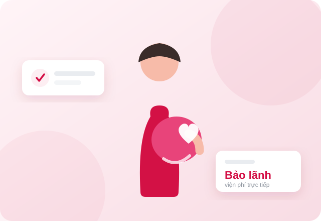

Chọn một mục để chúng tôi hiển thị đúng thông tin bạn cần — thay vì bắt bạn đọc hết mọi thứ.
Gói thai sản tham gia độc lập, không bắt buộc mua kèm hợp đồng nhân thọ dài hạn. Dưới đây là toàn bộ những gì bạn cần biết, bao gồm cả những điểm bất lợi.
Phần lớn quyền lợi thai sản trên thị trường Việt Nam nằm trong thẻ sức khoẻ bổ trợ. Mà thẻ bổ trợ thì phải gắn vào một hợp đồng bảo hiểm nhân thọ chính. Nghĩa là để có quyền lợi thai sản trị giá vài chục triệu, bạn được yêu cầu cam kết một hợp đồng 15–20 năm với mức phí khoảng 20 triệu mỗi năm.
Với một cặp vợ chồng trẻ vừa mua nhà, vừa chuẩn bị sinh con, đó là một rào cản rất lớn — và nó khiến nhiều người bỏ luôn ý định chuẩn bị.
Gói thai sản rời giải quyết đúng điểm nghẽn này: tham gia độc lập, giải quyết đúng nhu cầu trước mắt, không buộc cam kết dài hạn. Khi nào gia đình sẵn sàng cho kế hoạch dài hơi hơn thì tính tiếp — và lúc đó bạn đã có đủ dữ liệu để quyết định.

Ngắn hơn mức 365 ngày phổ biến trên thị trường. Chênh lệch 95 ngày này nghe nhỏ, nhưng với người đang lên kế hoạch sinh con thì nó là ba tháng cửa sổ chuẩn bị — đủ để không phải hoãn kế hoạch có con lại một chu kỳ.
Điểm này quan trọng hơn nhiều người nghĩ. Rất nhiều ca dự định sinh thường cuối cùng phải chuyển mổ vì lý do y khoa — và đó chính là lúc chi phí tăng gần gấp đôi. Một sản phẩm phân biệt hai hình thức sinh sẽ bỏ rơi bạn đúng vào lúc bạn cần nhất.
Tại nhiều bệnh viện sản lớn. Nghĩa là bạn không phải xoay tiền mặt ứng trước rồi chờ hoàn — điều rất đáng giá khi mọi thứ diễn ra gấp trong đêm.
Chi phí khám thai định kỳ suốt 9 tháng cộng lại là một khoản không nhỏ mà hầu như không ai tính vào ngân sách ban đầu.
Mức phí, hạn mức quyền lợi, danh sách bệnh viện bảo lãnh và điều khoản loại trừ có thể thay đổi theo từng đợt phát hành sản phẩm. Trước khi bạn quyết định, chúng tôi sẽ gửi bản điều khoản chính thức đang có hiệu lực và đi qua từng mục cùng bạn — đặc biệt là phần loại trừ. Đừng bao giờ mua chỉ dựa trên một bài đăng trên mạng, kể cả bài này.
Không có lựa chọn nào tốt hơn tuyệt đối — chỉ có lựa chọn phù hợp hơn với tình huống của bạn lúc này.
| Tiêu chí | Thai sản rời (Fuse × Techcombank) | Thẻ bổ trợ gắn hợp đồng nhân thọ |
|---|---|---|
| Điều kiện tham gia | Tham gia độc lập, không cần hợp đồng nhân thọ chính | Bắt buộc gắn vào một hợp đồng nhân thọ chính |
| Chi phí ban đầu | Thấp — chỉ trả cho phần quyền lợi mình cần | Cao hơn nhiều — phí hợp đồng chính cộng phí thẻ bổ trợ |
| Cam kết thời gian | Ngắn hạn, tái tục theo kỳ | Dài hạn, thường 15–20 năm |
| Thời gian chờ thai sản | 270 ngày | Thường 270–365 ngày tuỳ sản phẩm |
| Giá trị tích luỹ | Không có — đây là sản phẩm thuần bảo vệ | Có, nhưng giá trị hoàn lại 5–7 năm đầu thường thấp hơn tổng phí đã đóng |
| Quyền lợi bảo vệ dài hạn | Không — chỉ giải quyết nhu cầu trước mắt | Có — bảo vệ thu nhập, bệnh hiểm nghèo, tử vong |
| Phù hợp với ai | Gia đình trẻ chuẩn bị sinh con, chưa sẵn sàng cam kết dài hạn | Gia đình đã ổn định, muốn một kế hoạch bảo vệ tổng thể lâu dài |
Nếu gia đình bạn đã có hợp đồng nhân thọ và đang đóng phí ổn định — hãy kiểm tra xem thẻ bổ trợ hiện có đã bao gồm quyền lợi thai sản chưa trước khi mua thêm. Rất có thể bạn đã có rồi mà không biết. Nếu bạn chưa có gì và đang chuẩn bị sinh trong 1–2 năm tới, gói rời là điểm khởi đầu hợp lý hơn: giải quyết đúng nhu cầu, chi phí thấp, và không khoá bạn vào một cam kết mà bạn chưa chắc chắn.
Đây là phần khiến nhiều người tiếc nhất, vì nó hoàn toàn có thể tránh được nếu biết sớm hơn vài tháng.
Thời điểm lý tưởng. Hồ sơ có thời gian thẩm định thoải mái, thời gian chờ chắc chắn kết thúc trước ngày dự sinh, và bạn có thời gian so sánh nhiều lựa chọn.
Vẫn kịp với thời gian chờ 270 ngày, nhưng cần bắt đầu ngay chứ không nên trì hoãn thêm. Việc thẩm định sức khoẻ có thể mất thêm vài tuần.
Quyền lợi thai sản sẽ không kịp hiệu lực cho lần sinh này. Nhưng đừng bỏ qua hoàn toàn — gói sức khoẻ và nội trú vẫn có giá trị cho các biến chứng thai kỳ, và bạn nên chuẩn bị sẵn cho lần sinh sau.
Hầu hết sản phẩm sẽ từ chối quyền lợi thai sản cho lần mang thai hiện tại. Nếu có ai đó nói với bạn điều ngược lại, hãy yêu cầu họ chỉ đúng điều khoản trong hợp đồng — đây là dấu hiệu cảnh báo rõ ràng.
Nhắn cho chúng tôi mốc thời gian dự kiến — chúng tôi sẽ tính ngược ra hạn chót của riêng bạn và nói rõ bạn còn kịp hay đã trễ. Nếu đã trễ, chúng tôi cũng nói thẳng luôn thay vì để bạn mua một thứ không dùng được.